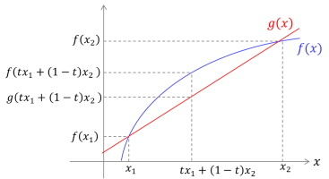
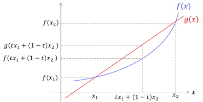

real function$f:\mathbb{R}\Rightarrow \mathbb{R}$が任意の区間$[x_1,x_2] (x_1 < x_2)$においてある実数$t (0\leq t \leq 1)$対して次を満たすとき、関数$f$を凹関数(concave function)と呼ぶ。 \begin{eqnarray} f\left( tx_1+(1-t)x_2 \right) \geq tf(x_1) + (1-t)f(x_2) \end{eqnarray}
連続性・微分可能性は不要なはず。

real function$f$と$(x_1,f(x_1))$と$(x_2,f(x_2))$を結ぶ直線$g$を考える。ある実数$t (0\leq t \leq 1)$に対して$X\equiv tx_1+(1-t)x_2$をとると$x_1\leq X \leq x_2$が得られる($x_1 \leq x_2 \Rightarrow x_1 \leq X,X \leq x_2$。逆も然り)。$g(x)$は次のように得られる。
\begin{eqnarray} g(x)=\frac{f(x_2)-f(x_1)}{x_2-x_1}x+\frac{x_2f(x_1)-x_1f(x_2)}{x_2-x_1} \end{eqnarray} $x=X$においては \begin{eqnarray} g(X)&=&\frac{f(x_2)-f(x_1)}{x_2-x_1}X+\frac{x_2f(x_1)-x_1f(x_2)}{x_2-x_1}\\ &=&\frac{f(x_2)-f(x_1)}{x_2-x_1}\left(tx_1+(1-t)x_2\right)+\frac{x_2f(x_1)-x_1f(x_2)}{x_2-x_1}\\ &=&\frac{1}{x_2-x_1}\left[tf(x_2)x_1-tf(x_1)x_1+f(x_2)x_2-tf(x_2)x_2+tf(x_1)x_2-f(x_2)x_1\right]\\ &=&tf(x_1)+(1-t)f(x_2) \end{eqnarray} $f(X)\geq g(X)\Rightarrow f\left( tx_1+(1-t)x_2 \right) \geq tf(x_1) + (1-t)f(x_2)$を満たす、上図ような関数がconcave funcitionと言える。

concave fucntionと同様に直線$g(x)$を定義し、上図のように次式が満たされているときにconvex functionと言える。 \begin{eqnarray} f(X)\leq g(X)\Rightarrow f\left( tx_1+(1-t)x_2 \right) \leq tf(x_1) + (1-t)f(x_2) \end{eqnarray}
$f(x)$がconvex fucntionのとき \begin{eqnarray} \frac{d^2f}{dx^2}>0 \quad \text{for any }x \end{eqnarray}
証明は略